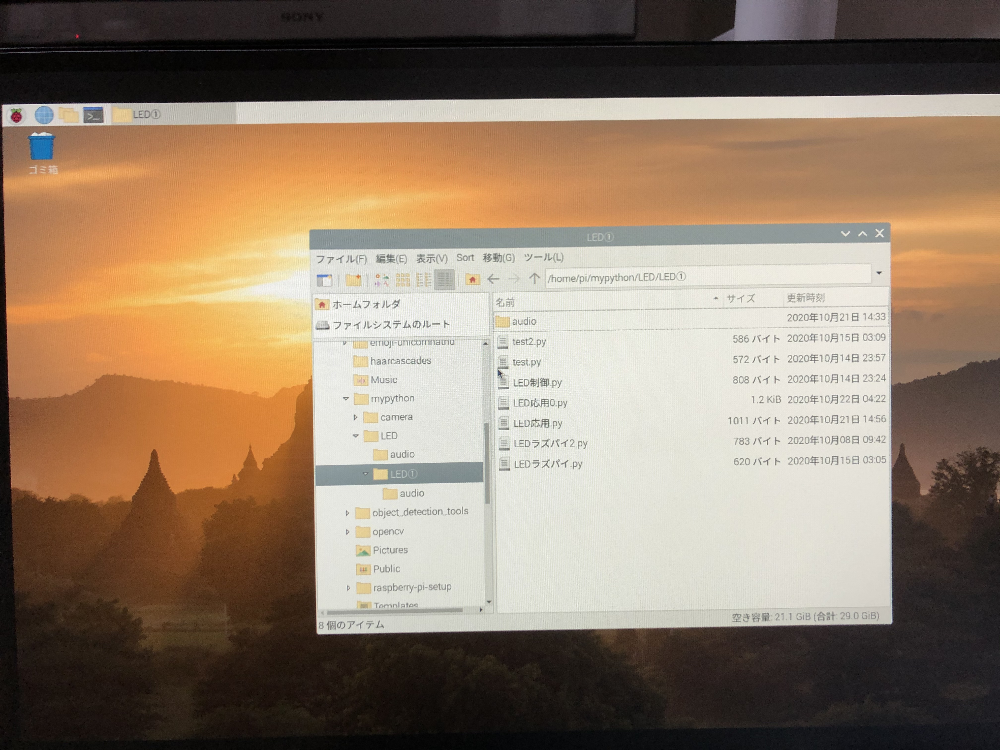

raspberrypi4 条件分岐②🐈

下記の画像を参照にプログラムを書き込み、 ボタンを押したら、LEDのライトが変わりかつ猫の鳴き声が発せられるというプログラムを構成する

✳︎プログラム✳︎

前回のプログラムにねこが鳴くプログラムをコピペしたが動かない。。。
一応、audioファイル（猫の鳴き声をダウンロードしたもの）を
このプログラムを作成したLED①というファイルに保存したが、動かない。。。

なぜだ！！！！！！
✳︎実行✳︎
実行すると、キーボードのrを押せば「赤」
キーボードのgを押せば「緑」
キーボードのbを押せば「青」となる！